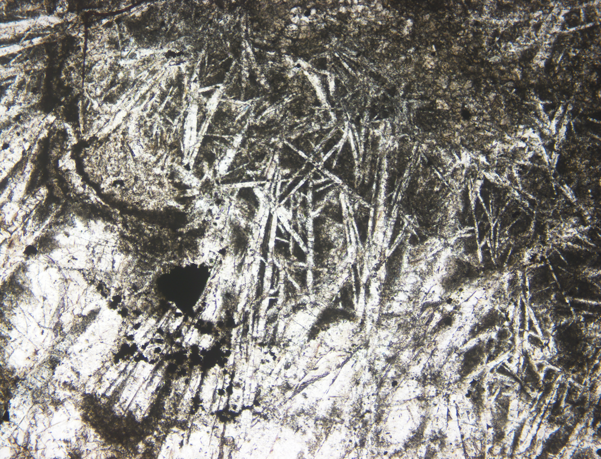

Research Experience
Barite evidence in South China Block to Illustrate the Global Scale of the Marinoan Oxygen-17 Depletion Event (MOSD)
|  |
Photomicrographs of barite layers in thin sections under plane polarized light(left) and orthogonal light(right). The layers, features, and fields of view are soft sediment deformation cross-cutting barite crystal fans
 |
17O-depleted sulfate can be confidently used as a marker for a global synchronous event (from Killingsworth et al., 2013, PNAS)
Mass-independently 17O-depleted in barite sulfate at the aftermath of the Neoproterozoic Marinoan Snowball Earth(~635Ma) is considered
as a record of ultra-high pCO2, which may be the highest level in the past 750Ma. The Marinoan Oxygen-17 Depletion Event (MOSD) is regarded
as a global event because it was an atmospheric phenomenon. Geologists have found evidences from Australia, northeast Svalbard and Africa
are consistent with MOSD being a global event. However, data reported in Killingsworth at. al. (2013) show that records in Hubei,
South China Block, display a temporal variation including a brief disappearance and a later reappearance in ∆17O, which is not consistent
with predicted global atmospheric processes (Cao and Bao, 2013). Our hypothesis is that the observed temporal variation is a local phenomenon,
caused by a local sulfate dilution event rather than an atmospheric event. The hypothesis predicts that the same excursion may not be observed
in a different location where the degree of sulfate dilution is likely different. To test the hypothesis, we must find a section where barite
layers are similarly abundant as those in the Wushanhu section but is distance away. We have located such a section: the Longxi Cun section in
Shengnongjia, Hubei Province, which is about 20km east of the Wushanhu section studied by Killingsworth et al (2013). We are going to test the
△17O in barite sulfate deposited in the cap carbonate using a sequence of HCl and DTPA dissolution and reprecipitation (DDARP) treatment,
along with testing the δ13C record to calibrate the specific MOSD period, in order to make the comparison to the outcomes of Killingsworth et al.
Constrain Pressure and Water conditions of Plagioclase Saturation in Global Arc Magma with Big Data Methods
Eu anomalies profile as the decreasing of MgO. Oceanic boundaries(right) demonstrate a simliar Eu negative anomaly point.Continental boundaries(left) are rather complicated
Mariana case study. Base on pMelts simulation, the point in the left demonstrate the pressure and H2O content when feldspar start crystallization. In the right, we set feldspar and spinel phase as crystallizaiton filter, indicating when feldspar crystalization the water content of magma is around 2.5 wt%
We try to constrain the pressure of feldspar crystallization of arc magma around the global ocean-continent boundary, which is critical to investigate
the magma evolution process during building continental crust. Eu is expected to substitute into plagioclase since the partition coefficient of Eu(II) is
much more positive in plagioclase than Sm(III) and Gd(III), leading to the Eu depletion of the residual magma. We take advantage of the GEOROC database
to establish a modern global arc dataset and track Eu/Eu* with magma evolution based on this assumption. By applying pMELTS software, we especially select
Mariana(oceanic arc), Tonga(oceanic arc), East Aleutian(oceanic-continental arc), and South Andes(continental arc) as our primary experimental settings.
The results indicate that for most oceanic arcs with shallow crusts, such as Mariana and Tonga, plagioclase can crystallize under the pressure of 5-6kbar,
while the H2O content is restricted to 3±1wt%. The continental arc with relatively thick crusts, always rich in water, plagioclase will saturate when the magma
transports into the mid-upper crust. It represents that the continental arc magma will rapidly evolve into felsic once reaching the middle crust and crystallize
batch in magma chambers at different depths. It can be regarded as a new tryout other than traditional high-pressure petrological methods.
Mapping Elment Distribution on the Lunar Surface with Nerual Networks
 |
Our learning model and result. Data are from interference imaging spectrum offered by Chang'e Mission. Apollo series mission provide hand samples as "label"
Mapping result